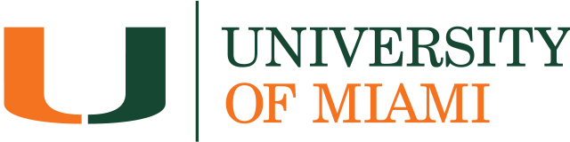

About me

I am interested in Social Developmental psychology Research. I am looking for a summer internship at a research lab or a child care center in order to gain hands-on experience. This experience will allow me to gain high-end professional knowledge in a field I am higlhy invested on, and I am considering following in graduate school. It will help me decide what exact field in psychology I want to pursue in the future. I will also further enhance my verbal and writing skills that are necessary for professional development. I am hoping that research experience will greatly strengthen my application to graduate school and if I do enter grad school with the sophistication gained from working in a laboratory, I will be more successful as a graduate student. I want to contribute to the creation of knowledge and get useful and interesting data that will further the research of our group and hopefully publish a work that will make an impact in the childhood development hypothesis, which if applied, can deliver great results. I am a first-generation college student, born and raised in Greece, which makes me a great addition to a diverse psychology community. I have volunteered for 3 years to a child care center, Agios Dimitrios, in Greece, with children with mental disorders. I was also granted access to explore the most serious mental health facility, with people with dangerous disorders, where only licensed professionals were allowed to enter. My experience in Agios Dimitrios those 3 years was life changing, and led me to want to pursue a career in psychology. I have also been a STEM teaching assistant to a summer camp "Anatolia College Rainbow Camp" in Greece for pre-kindergarten kids, where I had to effectively teach them science in ways that would fit each student. I dealt with children with very challenging behaviors, where I found ways to take the aggression out on more creative ways. I have also briefly volunteered at the Miami Lighthouse for the Blind with kids around the age of 5.
Education
University of Miami, Class of 2021

Bachelor of Science in Psychology
Bachelor of Science in Communications - Public Relations
Minor in Mathematics
GPA: 3.92/4
Honors
- Recipient of presidential merit scholarship
- University of Miami’s President’s and Provost’s Honor Rolls and Dean’s List
- Golden Key Honor Society
- National Society of Collegiate Scholars
- Praddy awards nomination
- Math Distinction at Center of Talented Youth by Johns Hopkins University
Work Experience
Consumer Marketing Fellow
Hill&Knowlton Strategies, Miami, FL
Click here to visit the H+K Strategies website
- Helps develop strategies with the team to specifically target and engage end users by conducting research on industries, competition, end users and forecasting consumer’s needs and trends to increase clients’ revenues.
- Analyzes trends, markets, performances, financial and research data, engagement to get to know the end user and presents reports, tables, and charts that interpret results and communicates them to the board and clients.
- Collaborates with the team in critical decision-making and marketing clients, deals and products to the media.
- Helps clients build their online presence and grow their businesses by managing their social media creatively.
- Creates and executes a variety of local and global campaigns/promotions/pitches at the same time with tight deadlines and oversees every step from brainstorming to delivery and measurement of performance.
Public Relations Intern
Epi-Direct Leda Papadopoulou, Thessaloniki, Greece
Click here to visit the Epi-direct website
- Organized and supervised local events for global leader companies e.g. Coca-Cola press conference, by conducting research, evaluating partnering options, delegating responsibilities, motivating the team, developing original creatives and communicating progress and goals to the clients.
- Resolved unexpected crisis for clients, e.g. labor protests, by executing proactive plans, mediating between the parties and working with external and internal stakeholders about resolution tactics.
- Generated marketing budgets and allocated resources efficiently for marketing events and campaigns.
- Reduced inefficiencies by introducing innovative communication, ethics and professionalism protocols.
- Conducted research for customer insights and competitors
- Reorganized the company’s system electronically
Campus Ambassador
Givebutter, Miami, FL
Click here to visit the Givebutter website
- Raised over $50,000 by 7 campaigns
- Appointed organizations and successfully pitched online fundraising platform, Givebutter, creatively.
- Guided the end users through the use of Givebutter and facilitated the explanation process for members.
- Exceeded the initial expectations of the number of users and the amount of money raised.
Public Relations Volunteer
NASCAR Homestead-Miami 2017, FL
Click here to visit the NASCAR website
- Controlled the access of the guests to the VIP places
- Gave instructions to the media concerning their shootings
- Assisted the guests and solved any issues that came up
Public Relations Intern
Courier Center, Thesssaloniki, Greece
Click here to visit the Courier Center website
- Assisted the team in writing radio advertising scripts, and later in measuring the impressions and engagement.
- Developed original and creative content and managed social media accounts and monitored analytics.
- Explained complex procedural matters simply to clients and employees by summarizing them effectively.
Public Relations Intern
Consulate General of Greece, Boston, MA
Click here to visit the Consulate General of Greece website
- Organized special events along with the Consul
- Explained procedural matters to the visitors
- Started the digitization of birth & death certificates
Ambassador of Greece
European Youth Parliament, European Union
Click here to visit the European Youth Parliament website
- Writes resolutions in collaboration with other ambassadors on topics concerning the European Union(EU) and presents them in the General Assembly.
- Attends European Youth Parliament's fora and conferences.
- Co-operates with people from other EU countries to ensure the success of this EYP fora.
Volunteer Experience
Notetaker for Office of Disabilites Services
University of Miami, Miami, FL
Click here to visit the UMiami Office of Disabilities Services website
Took detailed and organized class notes in different Strategic Communication classes (STC) and scanned and submit them to the Office of Disability Services every week so students could use them to ensure their success in the class.
Psychology Volunteer
Miami Lighthouse for the Blind and Visually Impaired, Inc., Miami, FL
Click here to visit the Miami Lighthouse for the Blind and Visually Impaired, Inc. website
Spends time with the people with visual impairments and serves meals.
Psychology Volunteer
Agios Dimitrios Medical Center, Thessaloniki, Greece
Click here to visit the Agios Dimitrios Medical Center website
Spent 3 hours every week at the center with one or two kids with mental disabilities and helped them have a good time by painting, dancing, playing games, going for walks and feeding them. Accompanied the kids to various events the center organizes.
Organization Volunteer
World Universities Debate Championship, Thessaloniki, Greece
Click here to read about the history of the World Universities Debating Championship
Supervised 3 of the debate rooms and was a debate timekeeper. Worked at the registration office and organized the ceremonies. Met the participants when they arrived and helped them settle at their different hotels
Social Services Volunteer
Thessaloniki Tourism Organization, Thessaloniki, Greece
Click here to visit the Thessaloniki Tourism Organization website
Informed tourists about places to visit & travelling. Communicated in Greek, English and French. Attended many openings for networking purposes.
Skills & Activities
Languages
- Native Greek
- Fluent English
- Conversational Spanish
- Conversational French
Technical Skills
- Adobe Creative Cloud
- MS Office Suite
- HTML
- CSS
- Javascript
- Keynote
Organizations
- Economics Club
- Canes Finance Association
- UM AdGroup
- Public Relations Student Society of America(Event Organizer)
- American Advertising Federation Miami
- Canesbuddy(Social Media Strategist)
- Girls of Outreach and Diversity
- First Generation U
- Psi Chi International Honors Society
- Council of International Students and Organization (Public Relations Chair)
- European Youth Parliament
- Model United Nations
{kind=link}
Bachelor of Science in Psychology
Bachelor of Science in Communications - Public Relations
Minor in Mathematics
GPA: 3.92/4
Honors
- Recipient of presidential merit scholarship
- University of Miami’s President’s and Provost’s Honor Rolls and Dean’s List
- Golden Key Honor Society
- National Society of Collegiate Scholars
- Praddy awards nomination
- Math Distinction at Center of Talented Youth by Johns Hopkins University
Work Experience
Consumer Marketing Fellow
Hill&Knowlton Strategies, Miami, FL Click here to visit the H+K Strategies website- Helps develop strategies with the team to specifically target and engage end users by conducting research on industries, competition, end users and forecasting consumer’s needs and trends to increase clients’ revenues.
- Analyzes trends, markets, performances, financial and research data, engagement to get to know the end user and presents reports, tables, and charts that interpret results and communicates them to the board and clients.
- Collaborates with the team in critical decision-making and marketing clients, deals and products to the media.
- Helps clients build their online presence and grow their businesses by managing their social media creatively.
- Creates and executes a variety of local and global campaigns/promotions/pitches at the same time with tight deadlines and oversees every step from brainstorming to delivery and measurement of performance.
Public Relations Intern
Epi-Direct Leda Papadopoulou, Thessaloniki, Greece Click here to visit the Epi-direct website- Organized and supervised local events for global leader companies e.g. Coca-Cola press conference, by conducting research, evaluating partnering options, delegating responsibilities, motivating the team, developing original creatives and communicating progress and goals to the clients.
- Resolved unexpected crisis for clients, e.g. labor protests, by executing proactive plans, mediating between the parties and working with external and internal stakeholders about resolution tactics.
- Generated marketing budgets and allocated resources efficiently for marketing events and campaigns.
- Reduced inefficiencies by introducing innovative communication, ethics and professionalism protocols.
- Conducted research for customer insights and competitors
- Reorganized the company’s system electronically
Campus Ambassador
Givebutter, Miami, FL Click here to visit the Givebutter website- Raised over $50,000 by 7 campaigns
- Appointed organizations and successfully pitched online fundraising platform, Givebutter, creatively.
- Guided the end users through the use of Givebutter and facilitated the explanation process for members.
- Exceeded the initial expectations of the number of users and the amount of money raised.
Public Relations Volunteer
NASCAR Homestead-Miami 2017, FL Click here to visit the NASCAR website- Controlled the access of the guests to the VIP places
- Gave instructions to the media concerning their shootings
- Assisted the guests and solved any issues that came up
Public Relations Intern
Courier Center, Thesssaloniki, Greece Click here to visit the Courier Center website- Assisted the team in writing radio advertising scripts, and later in measuring the impressions and engagement.
- Developed original and creative content and managed social media accounts and monitored analytics.
- Explained complex procedural matters simply to clients and employees by summarizing them effectively.
Public Relations Intern
Consulate General of Greece, Boston, MA Click here to visit the Consulate General of Greece website- Organized special events along with the Consul
- Explained procedural matters to the visitors
- Started the digitization of birth & death certificates
Ambassador of Greece
European Youth Parliament, European Union Click here to visit the European Youth Parliament website- Writes resolutions in collaboration with other ambassadors on topics concerning the European Union(EU) and presents them in the General Assembly.
- Attends European Youth Parliament's fora and conferences.
- Co-operates with people from other EU countries to ensure the success of this EYP fora.
Volunteer Experience
Notetaker for Office of Disabilites Services
University of Miami, Miami, FL Click here to visit the UMiami Office of Disabilities Services website Took detailed and organized class notes in different Strategic Communication classes (STC) and scanned and submit them to the Office of Disability Services every week so students could use them to ensure their success in the class.Psychology Volunteer
Miami Lighthouse for the Blind and Visually Impaired, Inc., Miami, FL Click here to visit the Miami Lighthouse for the Blind and Visually Impaired, Inc. website Spends time with the people with visual impairments and serves meals.Psychology Volunteer
Agios Dimitrios Medical Center, Thessaloniki, Greece Click here to visit the Agios Dimitrios Medical Center website Spent 3 hours every week at the center with one or two kids with mental disabilities and helped them have a good time by painting, dancing, playing games, going for walks and feeding them. Accompanied the kids to various events the center organizes.Organization Volunteer
World Universities Debate Championship, Thessaloniki, Greece Click here to read about the history of the World Universities Debating Championship Supervised 3 of the debate rooms and was a debate timekeeper. Worked at the registration office and organized the ceremonies. Met the participants when they arrived and helped them settle at their different hotelsSocial Services Volunteer
Thessaloniki Tourism Organization, Thessaloniki, Greece Click here to visit the Thessaloniki Tourism Organization website Informed tourists about places to visit & travelling. Communicated in Greek, English and French. Attended many openings for networking purposes.Skills & Activities
-
Languages
- Native Greek
- Fluent English
- Conversational Spanish
- Conversational French
-
Technical Skills
- Adobe Creative Cloud
- MS Office Suite
- HTML
- CSS
- Javascript
- Keynote
-
Organizations
- Economics Club
- Canes Finance Association
- UM AdGroup
- Public Relations Student Society of America(Event Organizer)
- American Advertising Federation Miami
- Canesbuddy(Social Media Strategist)
- Girls of Outreach and Diversity
- First Generation U
- Psi Chi International Honors Society
- Council of International Students and Organization (Public Relations Chair)
- European Youth Parliament
- Model United Nations